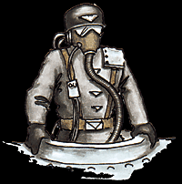

Imperial Forces |
Force Disposition Introduction |
Ork Forces |
|

The history of the original Minervan Tank Legion has long since passed into legend, but the stories are still told amongst the Guardsmen of the Armageddon Steel Legion of their very first Colonel, Jeremiah Mantubb.
There is some evidence to suggest that the 1st Steel Legion, under the command of Colonel Mantubb, departed their homeworld of Armageddon to drive back the Chaos renegades of the Sorcerer Lord Torvel the Deluded from the newly colonised Minerva in M37. The massed armoured ranks of the Steel Legion were able to completely overwhelm the renegades in a matter of months and the war culminated with Commissar Orthos striking down the Sorcerer Lord in the midst of a pitched battle that was to set Minerva free from the domination of Chaos.
The 1st Steel Legion was granted Right of Conquest and settled on the world, under the benign leadership of Mantubb who was to be made the Imperial Governor. Under his rule, Minerva was made into a strong industrial-based world that soon turned its growing economy to the production of arms and vehicles for the regiments of neighbouring worlds. When the time came for the first regiment to be founded upon Minerva itself, the roots of the new army were clearly based within Mantubb's old force, 1st Minervan Tank Legion rolled out of the gigantic weapons factories, to greet the cheering populace outside.
|
| ||||||||||||||||||||||||||||||||||||||||||||||||||
|
This is the story that many Imperial scholars use to explain the striking similarity between the Armageddon and Minervan Legions, though it may never be verified.
The civilised world of Minerva has changed dramatically since the days of liberation by the Steel Legion. Its industrial base has increased exponentially as greater and greater demands have been placed on its factories. Minerva has now reached the point where a full Tank Legion can be raised every four years whilst still fulfilling the obligations placed upon it by other worlds of the sub sector. The vehicles and equipment of Minerva are renowned for both their innovation in the application of existing designs, as well as for quality, which is seen as second only to the finest machine shops on Armageddon itself.
Seven multi-layered cities now sprawl over the surface of Minerva, whilst the choking fumes of the factories in between the civilised centres slowly reduce the wilderness to ash. This has prompted many Imperial scribes to speculate that, given a few short millennia, Minerva could well become a productive hive world. The more contentious of them have predicted that within this time frame, Minerva could well surpass Armageddon in strategic importance.
Utilising both the men and women of Minerva in roughly equal proportions, the Tank legions are often regarded as a model for the armoured formations of other regiments. There is a high proportion of officers to ranks, with the majority of the armoured vehicles being commanded by Lieutenants, whilst the guardsmen themselves fill out crew and logistical positions. The basic organisation of any Legion usually follows a similar pattern to many infantry regiments, with each tank being considered the equivalent of a unit of infantry; up to five tanks form a squadron, up to five squadrons form a standard company and so on. Added to this are the many specialist artillery, mine sweeping and other support vehicles that are attached to formations on an ad hoc basis. The machine shops of Minerva have gained a solid reputation for adapting existing vehicle designs, allowing the Tank Legions to engage in many forms of warfare, be it night fighting or desert assault. Fully one third of all Tank Legion vehicles have the conversion mechanisms necessary to make them completely amphibious within an hour, adding yet another tactical option to commanding officers.
The vast majority of the three Minervan Tank Legions engaged in the Land War of Armageddon can be found on the Plains of Anthrand. Fighting alongside the Ocanon Phalanx Troops, both regiments have complimented each other well in forming the South Primus Front to hold the forces of the Great Despot of Dregruk, Gazgrim. The trackless wastes of the Plains of Anthrand play well into the hands of the Minervan officers, allowing them to exercise their precise grasp of tactics as they manoeuvre their vehicles into combat with the Ork hordes. In conjunction with the Phalanx Troops, the Tank Legions have been able to defeat the first attacks by Gazgrim's numerically superior force, granting the Imperium a welcome victory in the war. The Plains of Anthrand are now the scene of many running battles as the Imperial tanks drive the Orks into the jungles separating the Prime and Secundus continents. The amphibious 217th Tank Legion has now been detached from the main army to defeat an attempted Ork beachhead launched from the Tempest Ocean. Using the variable buoyancy of their armoured vehicles, the crews are able to partially submerge their tanks so only the turrets are visible, jutting from the surface of the water to form a cordon of defensive, but mobile, pill boxes.
The armoured companies of the Minervan Tank Legions form a formidable part of the imperial defence in Armageddon Prime, and are currently heading on a course to intercept Gazgrim's War Horde as it moves into position on the Plains of Anthrand. Comprised in almost equal measure of men and women, the taciturn soldiers of Minerva are noted for their victories against superior numbers and their sound tactical manoeuvres. A full third of the Minervan legions are completely amphibious, and are taking up position on the shores of the Tempest Ocean in an effort to contain the Orks attempting to form a beachhead on the Southern Coast. | |||||||||||||||||||||||||||||||||||||||||||||||||||